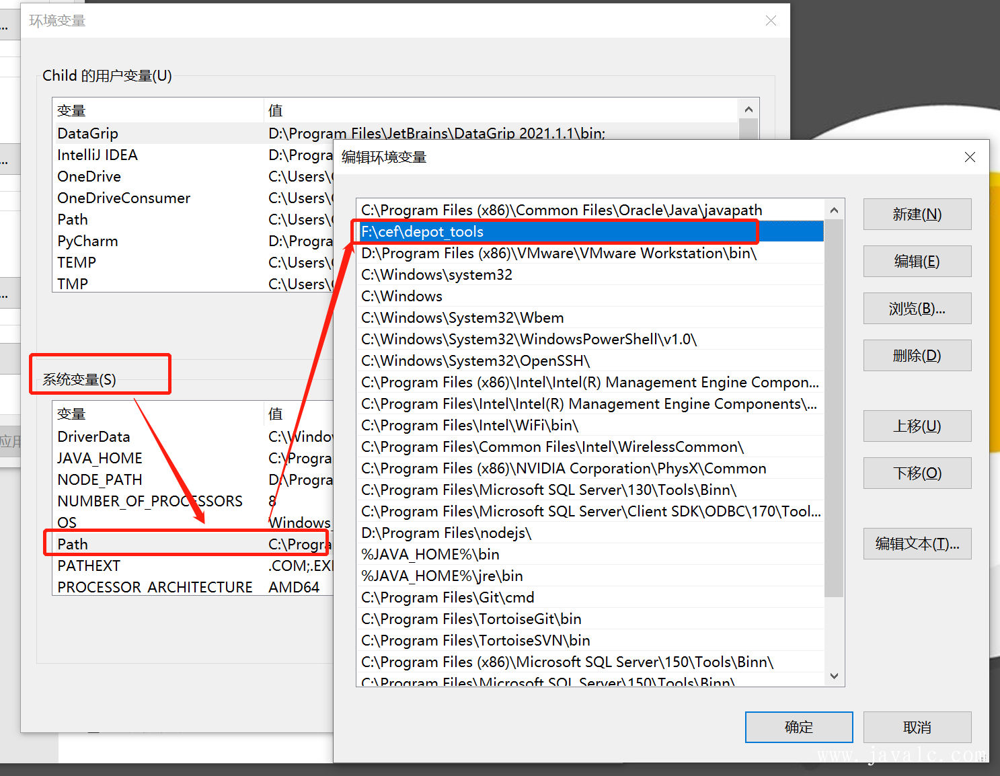
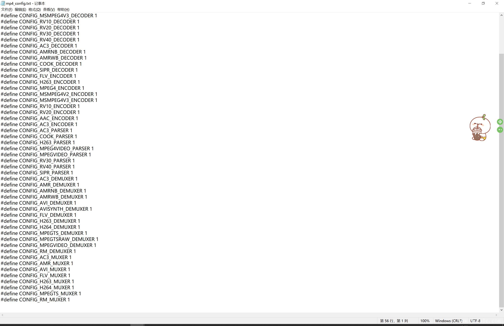
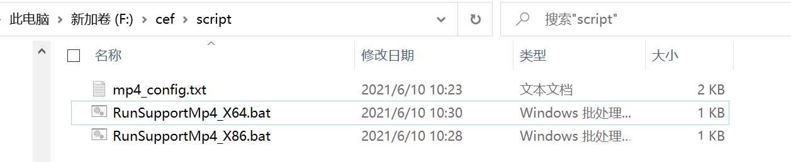
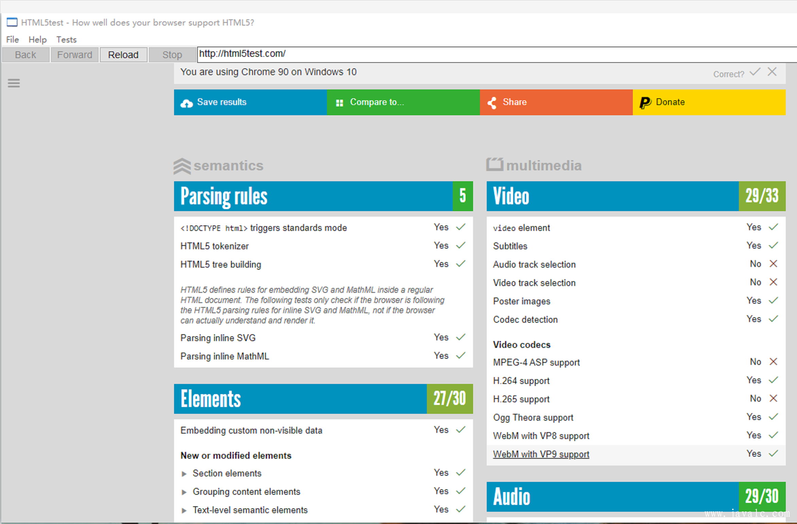

官方：参考地址
编译分三大步：
一、配置必须的环境
二、下载
三、编译
一、准备工作
1.Win10系统，必须64位，至少8GB的RAM，我采用win10 64位，16GRAM
2.比较新的VS,最近免费的社区版（编译不同版本要求不一样，具体看Cef官网帮助，我用的是VS2019），需要安装“C++桌面组件” 和 “MFC和ATL支持”,最好安装在默认路径
3.Win10 SDK（VS2019中有）
4.至少200G剩余空间，NTFS文件系统，部分文件超过4G，部分资料显示最少60G，编译结束后发现远超60G
5.设置系统区域为英语（美国）。（控制面板-区域-管理-更改系统区域设置-英语（美国）），设置完需要重启
6.创建工作目录，路径不能包含空格及特殊字符。例如f:\cef
7.下载编译工具包，解压至工作目录。例如f:\cef\depot_tools
建议从git仓库获取最新的：
git clone https://chromium.googlesource.com/chromium/tools/depot_tools.git8.下载编译脚本至工作目录。例如f:\cef
9.在工作目录下创建源码目录。例如f:\cef\source
10.安装ninja,并加添到系统环境变量下载地址:ninja
11.一个稳定的 VPN 网络可以让你快速下载 CEF 和 Chromium 代码
二、配置环境变量
1.配置depot_tools

2.配置ninja环境变量
三、配置下载脚本并下载
新建一个 bat脚本并命名为 git_4430.bat
在脚本中写入如下代码
set CEF_USE_GN=1
set GN_DEFINES=is_official_build=true proprietary_codecs=true ffmpeg_branding=Chrome
set GYP_DEFINES=buildtype=Official
set GYP_MSVS_VERSION=2019
set CEF_ARCHIVE_FORMAT=tar.bz2
set GN_ARGUMENTS=--ide=vs2019 --sln=cef --filters=//cef/*
python automate-git.py --download-dir=F:\cef\source --depot-tools-dir=F:\cef\depot-tools --branch=4430 --force-clean --no-build --no-distrib
pause代理运行(需要管理员)：
echo proxy setup ...
echo --------------------
netsh winhttp set proxy 127.0.0.1:10809
set https_proxy=http://127.0.0.1:10809
set http_proxy=http://127.0.0.1:10809
echo env setup ...
set CEF_USE_GN=1
set GN_DEFINES=is_official_build=true proprietary_codecs=true ffmpeg_branding=Chrome
set GYP_DEFINES=buildtype=Official
set GYP_MSVS_VERSION=2019
set CEF_ARCHIVE_FORMAT=tar.bz2
set GN_ARGUMENTS=--ide=vs2019 --sln=cef --filters=//cef/*
python automate-git.py --download-dir=F:\cef\source --depot-tools-dir=F:\cef\depot-tools --branch=4430 --force-clean --no-build --no-distrib
pause10809端口要改成自己实际的
两个脚本根据实际情况选择其一
GN_DEFINES 参数介绍：
ffmpeg_branding和proprietary_codecs表示开启多媒体编解码支持，但默认仅支持一小部分，后面介绍如何支持更多。is_official_build决定了是否是编译正式版本，指定该参数为 true 基本上都是为了产品发布使用，同时也会在创建解决方案的时候生成带有 sandbox 的解决方案（如 Release_GN_x86_sandbox），而不指定这个参数是没有的。如果你不是为了贡献代码，那默认这个都加上吧。use_jumbo_build官方资料默认指定，表示是否启用试验性的 jumbo 编译，编译过程会加快很多（至少快 1 小时），但是占用 CPU 和内存（尤其是内存）会剧增。is_component_build官方资料默认指定，但我们没有开启，这个参数表示是否启用组件化编译，设置为 true 以后，base、ffmpeg 等等都会被编译为动态库，使用时也是动态链接，编译出来的 cef_sandbox.lib 只有几兆大小，并且你需要复制很多 dll 文件到项目目录下才能运行。
automate-git.py 参数介绍
--branch表示你要下载哪个版本的代码，CEF 每个版本都有固定的分支，你去 CEF 项目页查看分支名称指定即可，这里我们编译 2019年9月份目前最新的版本 3809。--no-build表示只下载代码而不编译，这里只为下载代码，我们还要修改支持多媒体的参数，所以不进行编译--no-distrib不执行打包项目，这里只为下载代码，我们还要修改支持多媒体的参数，所以不进行打包--force-clean如果你曾经执行过这个脚本，可能会出错，则加上这个参数，它执行清理残留文件（你也可以手动在 chromium 源码目录执行 git clean -xdf 来清理目录中的多余内容）。automate-git.py 的其他参数可以手动执行
python automate-git.py --help来查看
注：
如果VPN不太稳定，可能会经常中断，造成脚本运行错误，重新运行脚本即可，源码主要有三部分，depot_tools源码cef源码和chromium源码，如果发现相应部分的源码已经同步完成，可以分别使用--no-depot-tools-update, --no-cef-update, --no-chromium-update 来不进行相应部分的代码更新。
自动构建脚本在下载源码时，并没有进度提示，比如在下载chromium/src目录时时间会非常长，会一直提示still working on src...，请耐心等待。
3.cmd（管理员权限运行）git_4430.bat脚本
完整目录结构：
f:/
cef/
automate-git.py
depot_tools/
source/四、修改文件使得CEF支持MP4能力
修改：source\chromium\src\third_party\ffmpeg\chromium\scripts\build_ffmpeg.py 文件
configure_flags['Chrome'].extend([
'--enable-decoder=aac,h264,mp3',
'--enable-demuxer=aac,mp3,mov',
'--enable-parser=aac,h264,mpegaudio',
])改为
configure_flags['Chrome'].extend([
'--enable-decoder=aac,h264,mp3,mpeg4,amrnb,amrwb,flv',
'--enable-demuxer=aac,mp3,mov,avi,amr,flv',
'--enable-parser=aac,h264,mpegaudio,mpeg4video,h263',
])分别打开:
f:\cef\source\chromium\src\third_party\ffmpeg\chromium\config\Chrome\win\ia32\config.h
f:\cef\source\chromium\src\third_party\ffmpeg\chromium\config\Chrome\win\x64\config.h
在原有配置宏FFMPEG_CONFIGURATION里增加以下：
--enable-decoder=’rv10,rv20,rv30,rv40,cook,h263,h263i,mpeg4,msmpeg4v1,msmpeg4v2,msmpeg4v3,amrnb,amrwb,ac3,flv’
--enable-demuxer=’rm,mpegvideo,avi,avisynth,h263,aac,amr,ac3,flv,mpegts,mpegtsraw’
--enable-parser=’mpegvideo,rv30,rv40,h263,mpeg4video,ac3’注：但在90.6.7中我看到FFMPEG_CONFIGURATION节点是被禁用的
因在90.6.7中看到FFMPEG_CONFIGURATION是被禁用因此我们使用下面这种方式
分别修改:
f:\cef\source\chromium\src\third_party\ffmpeg\chromium\config\Chrome\win\ia32\config.h
f:\cef\source\chromium\src\third_party\ffmpeg\chromium\config\Chrome\win\x64\config.h
把部分#define 由0改为1
#define CONFIG_FLV_DECODER 1
#define CONFIG_H263_DECODER 1
#define CONFIG_H263I_DECODER 1
#define CONFIG_MPEG4_DECODER 1
#define CONFIG_MPEGVIDEO_DECODER 1
#define CONFIG_MSMPEG4V1_DECODER 1
#define CONFIG_MSMPEG4V2_DECODER 1
#define CONFIG_MSMPEG4V3_DECODER 1
#define CONFIG_RV10_DECODER 1
#define CONFIG_RV20_DECODER 1
#define CONFIG_RV30_DECODER 1
#define CONFIG_RV40_DECODER 1
#define CONFIG_AC3_DECODER 1
#define CONFIG_AMRNB_DECODER 1
#define CONFIG_AMRWB_DECODER 1
#define CONFIG_COOK_DECODER 1
#define CONFIG_SIPR_DECODER 1
#define CONFIG_FLV_ENCODER 1
#define CONFIG_H263_ENCODER 1
#define CONFIG_MPEG4_ENCODER 1
#define CONFIG_MSMPEG4V2_ENCODER 1
#define CONFIG_MSMPEG4V3_ENCODER 1
#define CONFIG_RV10_ENCODER 1
#define CONFIG_RV20_ENCODER 1
#define CONFIG_AAC_ENCODER 1
#define CONFIG_AC3_ENCODER 1
#define CONFIG_AC3_PARSER 1
#define CONFIG_COOK_PARSER 1
#define CONFIG_H263_PARSER 1
#define CONFIG_MPEG4VIDEO_PARSER 1
#define CONFIG_MPEGVIDEO_PARSER 1
#define CONFIG_RV30_PARSER 1
#define CONFIG_RV40_PARSER 1
#define CONFIG_SIPR_PARSER 1
#define CONFIG_AC3_DEMUXER 1
#define CONFIG_AMR_DEMUXER 1
#define CONFIG_AMRNB_DEMUXER 1
#define CONFIG_AMRWB_DEMUXER 1
#define CONFIG_AVI_DEMUXER 1
#define CONFIG_AVISYNTH_DEMUXER 1
#define CONFIG_FLV_DEMUXER 1
#define CONFIG_H263_DEMUXER 1
#define CONFIG_H264_DEMUXER 1
#define CONFIG_MPEGTS_DEMUXER 1
#define CONFIG_MPEGTSRAW_DEMUXER 1
#define CONFIG_MPEGVIDEO_DEMUXER 1
#define CONFIG_RM_DEMUXER 1
#define CONFIG_AC3_MUXER 1
#define CONFIG_AMR_MUXER 1
#define CONFIG_AVI_MUXER 1
#define CONFIG_FLV_MUXER 1
#define CONFIG_H263_MUXER 1
#define CONFIG_H264_MUXER 1
#define CONFIG_MPEGTS_MUXER 1
#define CONFIG_RM_MUXER 1因为改的比较多，这里我们通过python的脚本进行帮我们修改
1.新建一个mp4_support.txt把上面的内容复制进去

2.新建一个update_mp4.py的脚本，内容如下：
## 第一参数为上面要修改的#define 的文件路径，第二参数为 F:\cef\source\chromium\src\third_party\ffmpeg\chromium\config\Chrome\win\ia32\config.h
import sys
import shutil
import re
import os
def Replace(change,content):
str_array = re.findall("#define\s\w+\s",change)
str_replace =str_array[0]
str_replace+="0"
str_dest =str_array[0]
str_dest+="1"
return content.replace(str_replace,str_dest)
if len(sys.argv) > 2 :
src_file_name =sys.argv[1]
dest_file_name=sys.argv[2]
else:
src_file_name =raw_input("Please input src file path name:").replace("\r","")
dest_file_name =raw_input("Please input dest file path name:").replace("\r","")
file_src_handle = open(src_file_name,"r")
file_src_lines = file_src_handle.readlines()
file_src_handle.close()
file_dest_handle = open(dest_file_name,"r")
dest_file_content = file_dest_handle.read()
file_dest_handle.close()
for line in file_src_lines:
dest_file_content = Replace(line,dest_file_content)
write_file_path = os.getcwd()+"\\"+ os.path.basename(dest_file_name)
ready_copy = open(write_file_path,"w")
ready_copy.write(dest_file_content)
ready_copy.close()
shutil.copy(write_file_path,dest_file_name)
os.remove(write_file_path)
print("Support mp4 Success!!!")3.新建一个bat 脚本用于启动我们的update_mp4.py脚本(也可以直接通过cmd进行启动) bat脚本内容如下:
python update_mp4.py F:/cef/script/mp4_support.txt F:/cef/source/chromium/src/third_party/ffmpeg/chromium/config/Chrome/win/ia32/config.h
pausepython update_mp4.py F:/cef/script/mp4_support.txt F:/cef/source/chromium/src/third_party/ffmpeg/chromium/config/Chrome/win/x64/config.h
pause4.分别执行两个脚本
目录如下：

五、创建编译脚本
新建两个脚本分别对应x86、x64
build_x64_4430.bat文件内容如下：
set CEF_USE_GN=1
set GN_DEFINES=is_official_build=true proprietary_codecs=true ffmpeg_branding=Chrome
set GYP_DEFINES=buildtype=Official
set GYP_MSVS_VERSION=2019
set CEF_ARCHIVE_FORMAT=tar.bz2
set DEPOT_TOOLS_WIN_TOOLCHAIN=0
set GYP_GENERATORS=ninja,msvs-ninja
set GN_ARGUMENTS=--ide=vs2019 --sln=cef --filters=//cef/*
set WIN_CUSTOM_TOOLCHAIN=1
set CEF_VCVARS=none
set GYP_MSVS_OVERRIDE_PATH=C:\Program Files (x86)\Microsoft Visual Studio\2019\Enterprise
set SDK_ROOT=C:\Program Files (x86)\Windows Kits\10
set PATH=C:\Program Files (x86)\Windows Kits\10\bin\10.0.19041.0\x64;C:\Program Files (x86)\Microsoft Visual Studio\2019\Enterprise\VC\Tools\MSVC\14.29.30037\bin\HostX64\x64;C:\Program Files (x86)\Microsoft Visual Studio\2019\Enterprise\VC\Redist\MSVC\14.13.26020\x64\Microsoft.VC141.CRT;%PATH%
set LIB=C:\Program Files (x86)\Windows Kits\10\Lib\10.0.19041.0\um\x64;C:\Program Files (x86)\Windows Kits\10\Lib\10.0.19041.0\ucrt\x64;C:\Program Files (x86)\Microsoft Visual Studio\2019\Enterprise\VC\Tools\MSVC\14.29.30037\lib\x64;C:\Program Files (x86)\Microsoft Visual Studio\2019\Enterprise\VC\Tools\MSVC\14.29.30037\atlmfc\lib\x64;%LIB%
set INCLUDE=C:\Program Files (x86)\Windows Kits\10\Include\10.0.19041.0\um;C:\Program Files (x86)\Windows Kits\10\Include\10.0.19041.0\ucrt;C:\Program Files (x86)\Windows Kits\10\Include\10.0.19041.0\shared;C:\Program Files (x86)\Microsoft Visual Studio\2019\Enterprise\VC\Tools\MSVC\14.29.30037\include;C:\Program Files (x86)\Microsoft Visual Studio\2019\Enterprise\VC\Tools\MSVC\14.29.30037\atlmfc\include;%INCLUDE%
set VS_CRT_ROOT=C:\Program Files (x86)\Microsoft Visual Studio\2019\Enterprise\VC\Tools\MSVC\14.29.30037\crt\src\vcruntim
python automate-git.py --download-dir=f:\cef\source --depot-tools-dir=F:\cef\depot-tools --branch=4430 --x64-build --no-update --build-log-file --verbose-build --force-distrib --force-build --no-debug-build
pausebuild_x86_4430.bat文件内容如下：
set CEF_USE_GN=1
set GN_DEFINES=is_official_build=true proprietary_codecs=true ffmpeg_branding=Chrome
set GYP_DEFINES=buildtype=Official
set GYP_MSVS_VERSION=2019
set CEF_ARCHIVE_FORMAT=tar.bz2
set DEPOT_TOOLS_WIN_TOOLCHAIN=0
set GYP_GENERATORS=ninja,msvs-ninja
set GN_ARGUMENTS=--ide=vs2019 --sln=cef --filters=//cef/*
set WIN_CUSTOM_TOOLCHAIN=1
set CEF_VCVARS=none
set GYP_MSVS_OVERRIDE_PATH=C:\Program Files (x86)\Microsoft Visual Studio\2019\Enterprise
set SDK_ROOT=C:\Program Files (x86)\Windows Kits\10
set INCLUDE=C:\Program Files (x86)\Windows Kits\10\Include\10.0.19041.0\um;C:\Program Files (x86)\Windows Kits\10\Include\10.0.19041.0\ucrt;C:\Program Files (x86)\Windows Kits\10\Include\10.0.19041.0\shared;C:\Program Files (x86)\Microsoft Visual Studio\2019\Enterprise\VC\Tools\MSVC\14.29.30037\include;C:\Program Files (x86)\Microsoft Visual Studio\2019\Enterprise\VC\Tools\MSVC\14.29.30037\atlmfc\include;%INCLUDE%
set PATH=C:\Program Files (x86)\Windows Kits\10\bin\10.0.19041.0\x86;C:\Program Files (x86)\Microsoft Visual Studio\2019\Enterprise\VC\Tools\MSVC\14.29.30037\bin\HostX64\x86;C:\Program Files (x86)\Microsoft Visual Studio\2019\Enterprise\VC\Tools\MSVC\14.29.30037\bin\HostX64\x64;C:\Program Files (x86)\Microsoft Visual Studio\2019\Enterprise\VC\Redist\MSVC\14.29.30037\x64\Microsoft.VC141.CRT;%PATH%
set LIB=C:\Program Files (x86)\Windows Kits\10\Lib\10.0.19041.0\um\x86;C:\Program Files (x86)\Windows Kits\10\Lib\10.0.19041.0\ucrt\x86;C:\Program Files (x86)\Microsoft Visual Studio\2019\Enterprise\VC\Tools\MSVC\14.29.30037\lib\x86;C:\Program Files (x86)\Microsoft Visual Studio\2019\Enterprise\VC\Tools\MSVC\14.29.30037\atlmfc\lib\x86;%LIB%
set VS_CRT_ROOT=C:\Program Files (x86)\Microsoft Visual Studio\2019\Enterprise\VC\Tools\MSVC\14.29.30037\crt\src\vcruntim
python automate-git.py --download-dir=f:\cef\source --depot-tools-dir=F:\cef\depot-tools --branch=4430 --no-update --build-log-file --verbose-build --force-distrib --force-build --no-debug-build
pause注:根据自己的VS版本、路径，Win10 SDK版本、路径进行对应更改
备注：bat中的选项可以有：
--download-dir 源码下载目录
--depot-tools-dir 工具包目录
--branch 源码分支(默认trunk主分支)
--checkout 指定patch版本（默认最近提交)
--no-build 下载完不自动开始编译（我们需要修改编译配置)
--no-update 确定源码下载完毕仅重新编译时使用
--force-build 强制编译（发现在有成功编译的时候再编译不会执行，可以加上这个
--no-debug-build 只编译release版本
--no-release-build 只编译debug版本
六、执行对应该环境的脚本进入漫长的等待
七.编译完成
输出目录为source\chromium\src\out\Release_GN_x86 和 source\chromium\src\cef\binary_distrib，Release_GN_x86下有cefclient.exe可以测试，binary_distrib下有cef_binary_90.6.7+g19ba721+chromium-90.0.4430.212_windows32
通过cmd 运行cefclient.exe -url=http://html5test.com -single-process 结果如下：

automate-git.py 参数
Usage: automate-git.py [options]
This utility implements automation for the download, update, build and
distribution of CEF.
Options:
-h, --help show this help message and exit
--download-dir=DIR Download directory with no spaces [required].
--depot-tools-dir=DIR
Download directory for depot_tools.
--depot-tools-archive=DEPOTTOOLSARCHIVE
Zip archive file that contains a single top-level
depot_tools directory.
--branch=BRANCH Branch of CEF to build (master, 3987, ...). This will
be used to name the CEF download directory and to
identify the correct URL if --url is not specified.
The default value is master.
--url=URL CEF download URL. If not specified the default URL
will be used.
--chromium-url=CHROMIUMURL
Chromium download URL. If not specified the default
URL will be used.
--checkout=CHECKOUT Version of CEF to checkout. If not specified the most
recent remote version of the branch will be used.
--chromium-checkout=CHROMIUMCHECKOUT
Version of Chromium to checkout (Git branch/hash/tag).
This overrides the value specified by CEF in
CHROMIUM_BUILD_COMPATIBILITY.txt.
--chromium-channel=CHROMIUMCHANNEL
Chromium channel to check out (canary, dev, beta or
stable). This overrides the value specified by CEF in
CHROMIUM_BUILD_COMPATIBILITY.txt.
--chromium-channel-distance=CHROMIUMCHANNELDISTANCE
The target number of commits to step in the channel,
or 0 to use the newest channel version. Used in
combination with --chromium-channel.
--force-config Force creation of a new gclient config file.
--force-clean Force a clean checkout of Chromium and CEF. This will
trigger a new update, build and distribution.
--force-clean-deps Force a clean checkout of Chromium dependencies. Used
in combination with --force-clean.
--dry-run Output commands without executing them.
--dry-run-platform=DRYRUNPLATFORM
Simulate a dry run on the specified platform (windows,
mac, linux). Must be used in combination with the
--dry-run flag.
--force-update Force a Chromium and CEF update. This will trigger a
new build and distribution.
--no-update Do not update Chromium or CEF. Pass --force-build or
--force-distrib if you desire a new build or
distribution.
--no-cef-update Do not update CEF. Pass --force-build or --force-
distrib if you desire a new build or distribution.
--force-cef-update Force a CEF update. This will cause local changes in
the CEF checkout to be discarded and patch files to be
reapplied.
--no-chromium-update Do not update Chromium.
--no-depot-tools-update
Do not update depot_tools.
--fast-update Update existing Chromium/CEF checkouts for fast
incremental builds by attempting to minimize the
number of modified files. The update will fail if
there are unstaged CEF changes or if Chromium changes
are not included in a patch file.
--force-patch-update Force update of patch files.
--resave Resave patch files.
--log-chromium-changes
Create a log of the Chromium changes.
--force-build Force CEF debug and release builds. This builds
[build-target] on all platforms and chrome_sandbox on
Linux.
--no-build Do not build CEF.
--build-target=BUILDTARGET
Target name(s) to build (defaults to "cefclient").
--build-tests Also build the test target specified via --test-
target.
--no-debug-build Don't perform the CEF debug build.
--no-release-build Don't perform the CEF release build.
--verbose-build Show all command lines while building.
--build-failure-limit=BUILDFAILURELIMIT
Keep going until N jobs fail.
--build-log-file Write build logs to file. The file will be named
"build-[branch]-[debug|release].log" in the download
directory.
--x64-build Create a 64-bit build.
--arm-build Create an ARM build.
--arm64-build Create an ARM64 build.
--run-tests Run the ceftests target.
--no-debug-tests Don't run debug build tests.
--no-release-tests Don't run release build tests.
--test-target=TESTTARGET
Test target name to build (defaults to "ceftests").
--test-prefix=TESTPREFIX
Prefix for running the test executable (e.g. `xvfb-
run` on Linux).
--test-args=TESTARGS Arguments that will be passed to the test executable.
--force-distrib Force creation of a CEF binary distribution.
--no-distrib Don't create a CEF binary distribution.
--minimal-distrib Create a minimal CEF binary distribution.
--minimal-distrib-only
Create a minimal CEF binary distribution only.
--client-distrib Create a client CEF binary distribution.
--client-distrib-only
Create a client CEF binary distribution only.
--sandbox-distrib Create a cef_sandbox static library distribution.
--sandbox-distrib-only
Create a cef_sandbox static library distribution only.
--no-distrib-docs Don't create CEF documentation.
--no-distrib-archive Don't create archives for output directories.
--clean-artifacts Clean the artifacts output directory.
--distrib-subdir=DISTRIBSUBDIR
CEF distrib dir name, child of
chromium/src/cef/binary_distrib
--distrib-subdir-suffix=DISTRIBSUBDIRSUFFIX
CEF distrib dir name suffix, child of
chromium/src/cef/binary_distrib
我看有人在3239版本上这样加个配置就好
configure_flags['Chrome'].extend([
'--enable-decoder=aac,h264,mp3,mpeg4,amrnb,amrwb,flv',
'--enable-demuxer=aac,mp3,mov,avi,amr,flv',
'--enable-parser=aac,h264,mpegaudio,mpeg4video,h263',
])
邮箱：liduqun@qq.com
建议做一个百度网盘分享链接
百度云盘:链接：https://pan.baidu.com/s/1P4YJsi24Uw45u9gZeUA35g 提取码：5555
编码后:file:///E:/%E3%80%90%E7%BB%9F%E7%BC%96%E7%89%88%E3%80%91%E3%80%8A%E7%8C%AB%E3%80%8BPPT%E8%AF%BE%E4%BB%B6-%E5%9B%9B%E5%B9%B4%E7%BA%A7-%E4%B8%8B%E5%86%8C%E7%AC%AC13%E8%AF%BE.pdf
我的邮箱:258049189@qq.com
楼主有空可以发布一下更新的版本吗？ 目前 cefsharp 是 99.2.12
计算机硬件达不到要求，自己折腾怕是无法最终编译出需要的 dll 文件
感谢感谢！
发表评论